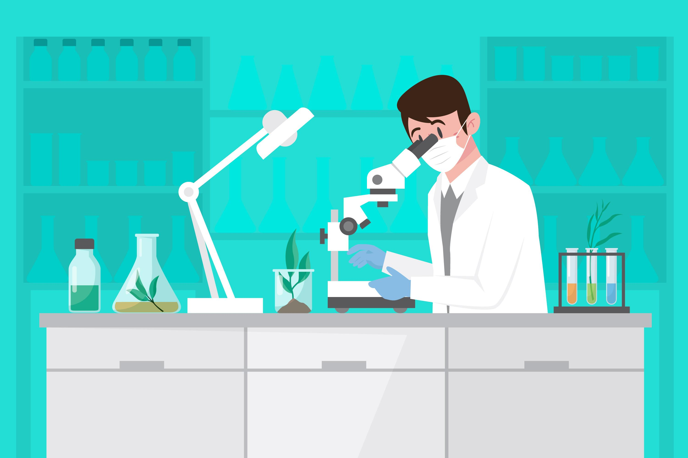
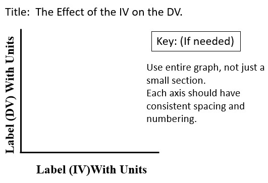

Welcome
Welcome to April Barton’s Experimental Design Site. This site is designed as an educational site. The purpose of the site is to expose students to experimental design and help students learn about the different parts of experimental design.
About the Site
As a science teacher, I know that experimental design is an important topic for students to master in high school science classes. The goal this site is to help students master the topic of experimental design. The site’s objective is to help students understand how to correctly use experimental design. Students will be exposed to definitions of each part of experimental design, such as independent, dependent variables, constants, control group, and experimental group. Students will be given an example experiment and each part of the experimental design with be explained using that example. Students will also be taught how to graph using the information in experimental design.
Goal 1: Define the parts of the Experimental Design.
Scientific experiments allow scientists to test hypotheses and find out how something happens. Watch this video for more information.
Read this article for more information.
Goal 2: Apply Experimental Design knowledge to an experiment to identify the parts of the experimental design.
Here is an example of an experiment. A scientist wanted to know if fertilizer affected plant growth. He had 4 of the same plants. Each plant was in the same pot. Each plant had the same amount of soil, water, and sunlight daily. He labeled the plants A, B, C, and D. Plant A was given 5 grams of fertilizer. Plant B was given 10 grams of fertilizer. Plant C was given 15 grams of fertilizer. Plant D did not have any fertilizer. He measured the plants for 30 days. He recorded his data each day.
Watch this video for more information.
Goal 3: Graph the data from an experimental design experiment.
A graph is a pictorial representation of data used to show a relationship between two or more factors. Regardless of the type of graph used to display data, all graphs need to have the following properties:
Line, Bar and Pie Graphs
A line graph has one or more lines connecting a series of data points.
A bar graph uses a series of columns, or bars, to display data.
A pie chart is used to represent the parts of a whole.
Watch this video for more information about graphing and eperimental design.
Watch this summary video over exprimental design.
Resources
Amoeba Sisters. (2019, June 6). Nature of Science. https://www.youtube.com/watch?v=3nAETHZTObk.
Barton, A. (2018). How to Make a Line Graph Image.
Khan Academy. (n.d.). Controlled experiments (article). Khan Academy. https://www.khanacademy.org/science/high-school-biology/hs-biology-foundations/hs-biology-and-the-scientific-method/a/experiments-and-observations.
Khan Academy. (n.d.). Introduction to experimental design (video). Khan Academy. https://www.khanacademy.org/science/high-school-biology/hs-biology-foundations/hs-biology-and-the-scientific-method/v/introduction-to-experimental-design.
Nucleus Medical Media. (2016, April 5). Biology: Controlled Experiments. YouTube. https://www.youtube.com/watch?v=D3ZB2RTylR4.